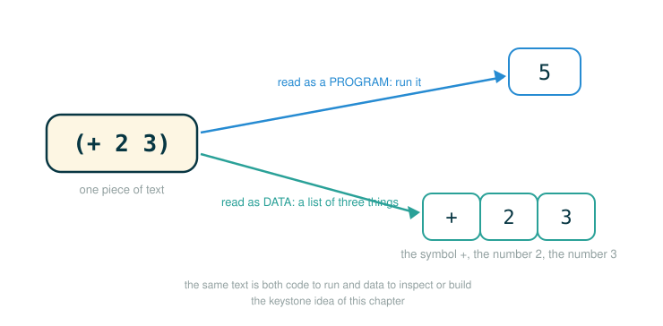

3.2 Quotation and Symbolic Data
Every Scheme name you have written so far has been active. When the interpreter sees square or a, it immediately looks that name up in the environment and uses whatever value it finds. That is exactly what you want most of the time.
This lesson gives you the opposite power: the ability to hold a name still and treat it as data. By the end you will be able to do four things. You will explain the difference between using a name and mentioning a name. You will read the quote special form and the apostrophe shorthand for it. You will predict what (list 'a b) produces without running it. And you will see why this small feature is the seed of the whole chapter's big idea: a program can be represented as data that another program inspects.
The constructs are short, but the habit underneath them is the one that matters: before the interpreter evaluates an expression, you decide whether you want its value or the expression itself.
Using a Word Versus Mentioning a Word
There is a distinction in ordinary language that programmers borrow directly. Consider a single word written on a board:
AdaIf a teacher says "Ada, please answer the question," the word is being used: it reaches out and picks a particular person. If the teacher says "the word Ada has three letters," the word is being mentioned: it is sitting there as a thing to talk about, and no person is being summoned.
The original text frames this with a sharper image. There is a real dog, which runs around and barks, and there is the word "dog," which is a linguistic construct for designating such things. The dog and the word are not the same kind of thing. You can put the word in quotation marks and count its letters; you cannot do that to the animal.
Programming languages need the same split. Sometimes a name should be used: look it up and get its value. Sometimes a name should be mentioned: keep the symbol itself as a piece of data. Scheme handles the second job with quotation.
Why We Need Quotation: Building a List of Symbols
Here is the concrete problem the original text uses to motivate quotation. Suppose all the data you have built so far was made out of numbers, and now you want to construct the list whose two elements are the symbols a and b, written (a b).
Your first instinct is to reach for list:
(list a b)But this does not give you what you want. The call expression (list a b) evaluates each operand first, so it builds a list of the values of a and b, not the symbols themselves. If a is 1 and b is 2, you get the list (1 2). The symbols disappeared the moment they were looked up.
To keep the symbols, you need a way to say "do not evaluate this; hand me the symbol." That new element in the language is quotation.
Symbols and the Quote Special Form
A symbol is a value that represents a name-like piece of text. Without quotation, a bare name is an expression that triggers a lookup:
aThe interpreter searches the environment for a binding named a. If one exists, you get its value; if not, you get an error.
With quotation, you preserve the name as data:
'aThis produces the symbol a itself, with no lookup at all. The leading apostrophe is the instruction "do not evaluate the following expression; use it as data."
The apostrophe is a reader abbreviation — that is, before the interpreter evaluates anything, the part that reads your text in automatically expands 'a into (quote a). The longer, explicit form is the quote special form:
(quote a)The short form 'a and the long form (quote a) mean exactly the same thing. quote is a special form rather than an ordinary procedure precisely because it must not evaluate its operand the normal way. A normal call like (list a b) evaluates a and b first; quote does the opposite, returning the operand untouched.
This is the official definition of quotation worth memorizing: in Scheme, any expression that is not evaluated is said to be quoted.
Anatomy: a bare name is a lookup
aa
├─ a ........... a name; an expression that asks the environment for its binding
└─ evaluates to the value bound to a (an error if a is unbound)Anatomy: the apostrophe holds the name still
'a'a
├─ ' ........... the quote abbreviation: do not evaluate what follows
├─ a ........... the symbol to preserve as data
└─ evaluates to the symbol a (no lookup happens)Anatomy: the long form of quote
(quote a)(quote a)
├─ ( ........... begins a special-form expression
├─ quote ....... the quote special form: return the operand without evaluating it
├─ a ........... the operand, preserved exactly as written
├─ ) ........... ends the expression
└─ evaluates to the symbol a (identical to 'a)Quotation Preserves Whole Expressions, Not Just Names
Quotation is not limited to single symbols. You can quote an entire compound expression, and Scheme preserves its structure as data instead of running it. This is where the chapter's central theme appears in miniature.
Normally this expression is a call:
(+ 2 3)The interpreter reads + as the operator, evaluates 2 and 3, applies addition, and the value is 5.
Quote the very same text and nothing is called:
'(+ 2 3)Now you have a three-element list: the symbol +, the number 2, and the number 3. The plus sign is no longer an operator to apply; it is just a symbol sitting in the first position of a list.
The same visible characters can be one of two completely different things depending on quotation. Evaluated, (+ 2 3) is a program that computes 5. Quoted, '(+ 2 3) is symbolic data that represents that program. That is the Chapter 3 theme in a single line: programs can be data.
The figure below shows the same text splitting into its two roles: a program to run on one side and data to inspect or build on the other.

Anatomy: quoting a compound expression
'(+ 2 3)'(+ 2 3)
├─ ' ........... quote: preserve the following list as data, do not call it
├─ ( ........... begins the list to preserve
├─ + ........... kept as the symbol +, not used as an operator
├─ 2 ........... kept as the number 2
├─ 3 ........... kept as the number 3
├─ ) ........... ends the list
└─ evaluates to the list (+ 2 3): the symbol +, then 2, then 3Quoting a List of Symbols
The motivating goal was the list (a b). Quotation reaches it directly, and the idea extends to any list of symbols:
'(a b c)This produces a list containing three symbols: a, b, and c. Crucially, the interpreter does not try to call a as an operator on b and c, and it does not look up any of the three names. The leading apostrophe quotes the whole list, so every element is preserved as data.
Anatomy: quoting a list of symbols
'(a b c)'(a b c)
├─ ' ........... quote: preserve the following list, evaluate nothing inside it
├─ ( ........... begins the list
├─ a ........... kept as the symbol a (not called, not looked up)
├─ b ........... kept as the symbol b
├─ c ........... kept as the symbol c
├─ ) ........... ends the list
└─ evaluates to the list (a b c): three symbolsQuoted Lists Are Still Lists
A quoted list is an ordinary list. Quotation changes how the list is created, but once it exists, every list operation you learned works on it normally. The original text demonstrates this with the two selectors you already know, car and cdr.
Take the first element:
(car '(a b c))The interpreter evaluates the operand '(a b c) to the list of symbols, then car selects its first element, the symbol a.
Take the rest:
(cdr '(a b c))Here '(a b c) again evaluates to the list of symbols, and cdr returns everything after the first element: the list containing b and c.
Notice the order of operations. The apostrophe applies only to (a b c), producing data. The surrounding call (car ...) or (cdr ...) is a perfectly ordinary call expression that runs as usual. Quotation and evaluation coexist in the same line.
Anatomy: selecting from a quoted list
(car '(a b c))(car '(a b c))
├─ ( ........... begins a call expression (this part is evaluated normally)
├─ car ......... the selector: return the first element of a list
├─ '(a b c) .... the operand: quotation makes it the list of symbols a, b, c
├─ ) ........... ends the call
└─ evaluates to the symbol a (the first element)(cdr '(a b c))(cdr '(a b c))
├─ ( ........... begins a call expression, evaluated normally
├─ cdr ......... the selector: return the list after the first element
├─ '(a b c) .... the operand: the quoted list of symbols a, b, c
├─ ) ........... ends the call
└─ evaluates to the list (b c)Building Symbolic Data from Ordinary Words
You can put symbols into a list even when those words have powerful meanings in the language. The original text shows this striking example:
(list 'define 'list)Read why both words are quoted. The word define is a special form, and the word list names a built-in procedure. If you wrote them unquoted, Scheme would try to treat them as language constructs. But here you do not want those meanings at all; you want the two words themselves as data sitting inside a new list. Quoting each one says "the symbol, please, not the construct," and the call to list then assembles them into a list whose two elements are the symbols define and list.
This is a small but vivid picture of programs-as-data: you are using ordinary list-building tools to assemble something that looks like the beginning of a define form, purely as data, with nothing performed.
Anatomy: a list of two language words as data
(list 'define 'list)(list 'define 'list)
├─ ( ........... begins a call expression
├─ list ........ the list constructor: gather its arguments into a list
├─ 'define ..... the symbol define (quoted, so the special form is NOT triggered)
├─ 'list ....... the symbol list (quoted, so the procedure is NOT called)
├─ ) ........... ends the call
└─ evaluates to the list (define list): two symbols, nothing performedThe Use-Versus-Mention Diagnostic
The original text settles the whole idea with three short examples built on two ordinary bindings. These are the source checkpoints for this section, and being able to predict all three is the real test of understanding.
First, set up two active names:
(define a 1)
(define b 2)Now a is bound to 1 and b is bound to 2. With both names unquoted, list evaluates each operand and builds a list of their values:
(list a b)The output is:
(1 2)With both names quoted, list receives the symbols instead, and they survive into the result:
(list 'a 'b)The output is:
(a b)The decisive case mixes the two. The first operand is quoted, so the symbol a is kept; the second operand is unquoted, so b is looked up and its value 2 is used:
(list 'a b)The output is:
(a 2)Anatomy: one quoted operand, one evaluated operand
(list 'a b)(list 'a b)
├─ ( ........... begins a call expression
├─ list ........ the list constructor
├─ 'a .......... quoted: contributes the symbol a
├─ b ........... unquoted: looked up in the environment, contributes the value 2
├─ ) ........... ends the call
└─ evaluates to the list (a 2)Line these three up and the rule is impossible to miss. The only thing that changed across the examples is which operands carry an apostrophe, and that single mark decides, operand by operand, whether you get the symbol or the value:
| Expression | What each operand does | Result |
|---|---|---|
(list a b) |
look up a, look up b |
(1 2) |
(list 'a 'b) |
keep symbol a, keep symbol b |
(a b) |
(list 'a b) |
keep symbol a, look up b |
(a 2) |
A Step-by-Step Evaluation of the Mixed Case
It is worth walking the interpreter through (list 'a b) one operand at a time, because it makes clear that quotation is just a rule about how a single operand is evaluated, not a special mode for the whole line.
Evaluate (list 'a b), with a bound to 1 and b bound to 2:
step 1 identify the operator
list -> the list-constructing procedure
step 2 evaluate the first operand
'a -> quote returns the symbol a, with no lookup
step 3 evaluate the second operand
b -> ordinary lookup finds the value 2
step 4 apply the operator to the evaluated operands
(list <symbol a> <value 2>) -> the list (a 2)Every step except step 2 is the normal call-evaluation rule you already know: find the operator, evaluate the operands, apply. Quotation only changes what happens inside step 2, turning an operand from "look it up" into "keep it as written." That locality is the whole concept.
The Boundary Between Expression and Data
Three closely related expressions sharpen the line one more time:
(list 1 2 3)'(1 2 3)'(list 1 2 3)Their meanings differ:
(list 1 2 3) calls the list procedure and builds a list of three numbers
'(1 2 3) directly produces the list of three numbers, no call performed
'(list 1 2 3) produces a list whose first element is the symbol listThe first two reach the same value, (1 2 3), by different routes: one calls a procedure, the other quotes a literal list. The third is genuinely different, because quoting (list 1 2 3) preserves the word list as a symbol in the first position rather than calling it.
This is the beginner bridge that matters most. Quotation does not mean "string," and it does not mean "freeze a value." It means "do not evaluate this expression right now; preserve its structure as data." A quoted list is a real list you can take apart; a quoted name is a real symbol you can store and compare.
⚠Common Beginner Traps
- Thinking
'ais the same as a string. In Scheme a symbol and a string are different kinds of values.'ais the symbola, not the text in quotation marks, so a symbol will not match a string in a comparison and code that expects'ato equal"a"silently takes the wrong branch. - Forgetting that quotation prevents evaluation.
(+ 2 3)computes5, but'(+ 2 3)produces a list that merely represents that expression. Nothing is added. - Reaching for quotation only to silence an error. Quote a name because you genuinely want the symbol as data, not as a random trick to stop a lookup from failing.
- Believing a quoted list is no longer a list.
'(a b c)is a perfectly ordinary list, andcar,cdr, and the other list operations work on it normally. - Expecting the apostrophe to spread across a whole call. In
(car '(a b c)), only(a b c)is quoted; the surroundingcarcall still evaluates the normal way. - Confusing
'(1 2 3)with'(list 1 2 3). The first is a list of three numbers; the second is a list whose first element is the symbollist.
✓Check Your Understanding
- What is the difference between evaluating
aand evaluating'a? - What does
(quote a)mean, and how does it relate to'a? - Why does
(list a b)fail to build the list(a b)whenais1andbis2? - What does
(car (cdr '(a b c)))evaluate to, and why? - Why are both words quoted in
(list 'define 'list)? - What are the three results of
(list a b),(list 'a 'b), and(list 'a b)whenais1andbis2, and why do they differ?
Show the answers
- Evaluating
alooks up the nameain the environment and returns its bound value (an error ifais unbound); evaluating'areturns the symbolaitself with no lookup. (quote a)is the explicit quote special form, which returns its operand without evaluating it;'ais just a reader abbreviation for(quote a), so the two are identical.- Because
(list a b)is an ordinary call that evaluates its operands first, so it builds a list of the values1and2, giving(1 2); the symbolsaandbare looked up and lost. - It evaluates to the symbol
b. The quoted'(a b c)is the list of three symbols;(cdr '(a b c))drops the first element to give(b c), andcarthen takes the first element of that, the symbolb. - Both words have language meanings (
defineis a special form,listis a procedure), but here they are wanted as data, so each is quoted to produce the symbol rather than trigger its construct. (list a b)gives(1 2)because both names are looked up;(list 'a 'b)gives(a b)because both are kept as symbols;(list 'a b)gives(a 2)because the first is kept as a symbol and the second is looked up. The apostrophe on each operand decides symbol versus value.
§Summary
Quotation lets Scheme treat an expression as data instead of evaluating it. A bare name is used: the interpreter looks it up. A quoted name, written 'a or (quote a), is mentioned: the interpreter returns the symbol itself. The same applies to whole expressions, so (+ 2 3) computes 5 while '(+ 2 3) is a list that represents that program. Quoted lists remain ordinary lists, which is why car and cdr work on '(a b c), and why (list 'define 'list) assembles two language words into data with nothing performed. The three checkpoints (list a b), (list 'a 'b), and (list 'a b) — yielding (1 2), (a b), and (a 2) — capture the whole idea: a single apostrophe, applied operand by operand, chooses between a value and a symbol. This is the chapter's central theme in its smallest form: when a program can be preserved as data, another program can inspect it, transform it, or evaluate it.
▶Step-Through Checkpoint
The next block models the lesson's core split in Python: looking a name up in an environment versus mentioning it as a literal piece of data. Python has no Scheme symbols, but a dictionary stands in for the environment, and a string of characters stands in for a held-still name. Stepping through it draws the environment diagram for that split: each use_name frame reaches out to the global environment dictionary to resolve its name, while each mention_name frame returns its string with no lookup at all, and program_as_data sits in the global frame as a plain ["+", 2, 3] list object waiting to be inspected. Before you step through the block below, write down three predictions: how many local frames open over the whole run, what mixed holds when its line finishes, and what the final two lines print for operator and operands. Don't worry if you're unsure — jot a guess, then check it against the walkthrough right below; this is practice to test yourself against, not a graded checkpoint.
# (1)
environment = {"a": 1, "b": 2}
def use_name(name):
return environment[name]
def mention_name(name):
return name
used_a = use_name("a")
mentioned_a = mention_name("a")
mixed = [mention_name("a"), use_name("b")]
program_as_data = ["+", 2, 3]
operator = program_as_data[0]
operands = program_as_data[1:]
print(used_a)
print(mentioned_a)
print(mixed)
print(operator)
print(operands)
Step through it one line at a time and check each prediction as the frames open. Four local frames appear in all, two for use_name and two for mention_name. Each use_name frame reads the global dictionary before returning, so using a name costs an environment lookup: 1 for "a" and 2 for "b", exactly like the unquoted names in (list a b). Each mention_name frame returns its string untouched, with no lookup at all, modeling the quoted 'a. That is why mixed holds ['a', 2], the Python echo of (list 'a b) giving (a 2), and why the first three prints show 1, a, and ['a', 2]. The last two prints, + and [2, 3], come from program_as_data, the model of '(+ 2 3): a program expression stored as a plain data structure, its operator and operands available for inspection before any interpreter runs it.